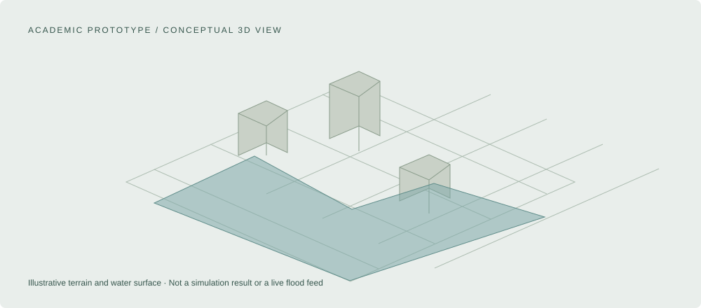

ACADEMIC / M.SC. THESIS / UNIVERSITY OF TWENTE (ITC)
Exploring urban flood scenarios in 3D.
An academic Web GIS visualization prototype built with prepared terrain and geospatial datasets.
- ROLE
- M.Sc. thesis researcher
- PERIOD
- 2023
- FOCUS
- Web-based 3D visualization prototype

M.Sc. thesis prototype
Terrain & geospatial datasets
Scenario visualization
01
The research context
My M.Sc. thesis explored a web-based 3D visualization prototype for urban flood scenarios. The project used prepared terrain and geospatial datasets, with Python, CesiumJS, and Three.js.
02
What I developed
I developed the web-based visualization prototype to explore urban flood scenarios in a 3D geospatial environment. The project belongs in the research section of my portfolio because it demonstrates an academic Web GIS implementation.
03
Technical scope
The technical focus was the use of prepared terrain and geospatial datasets in a browser-based 3D visualization. Python supported the geospatial work, with CesiumJS and Three.js used in the visualization prototype.
04
Limits of the prototype
This was an academic visualization prototype. It is not presented as a live flood-monitoring service, a forecasting system, or an operational municipal decision platform. Prepared scenarios should be understood within the limitations of their input data and research context.
OWNERSHIP & PUBLIC MATERIAL
An academic prototype, separate from my professional carbon, infrastructure, and climate work.
All diagrams here are original conceptual illustrations. They contain no confidential datasets, project locations, client records, or production configuration.
Public reference
View the Cesium_Terrain repositoryLinked material provides context; it is not independent evidence of my individual contribution.